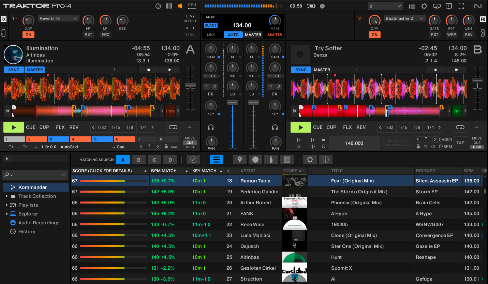

Inside Traktor Pro 4
Find the next track, in Traktor itself. Track Kommander analyses your library, watches the deck you choose, and lists the tracks that actually fit it right in Traktor's own browser, ranked, with their score beside them. Load them the way you always do.
Take that library to the club. It writes a USB stick CDJs read on their own — beat grids, hotcues, waveforms, playlists — straight from your Traktor collection. No Rekordbox in the middle.
macOS (Apple Silicon) and Windows, on your own machine. Nothing is uploaded anywhere. Free software, under the GPL.

What it does
Inside Traktor
- A band of its own above Traktor's browser — which deck to match (A–D), the matching cards, automation, and its pages: Hotcues, Tagging, Export, Stats, Settings.
- A "Track Kommander" entry in Traktor's tree. Click it and Traktor's list shows the best matches for the chosen deck, best first, with SCORE, BPM MATCH and KEY MATCH columns. They are Traktor's own rows: drag them to a deck, load them with your controller, sort them, as with any playlist.
- No deck chosen? The list shows a different random selection of your library each time Traktor starts, so a quiet moment turns up tracks you had forgotten.
- Your Traktor is not changed. Track Kommander runs in a copy of it ("Traktor Pro 4 TK") on macOS, or is started together with it on Windows. Your normal Traktor Pro 4 starts as before.
Finding the next track
- Analyses your collection — BPM, musical key, and a set of perceptual features (energy, mood, vocal/instrumental, style) from CLAP, an audio model that runs locally. New tracks are analysed while Traktor is idle. Your files never leave the machine.
- Ranks the rest of your library against the deck on the dimensions you care about: tempo, harmonic compatibility, energy, style, bassline and structure, and whatever else you weight on the cards.
- Finds tracks that fit once transposed — a semitone or three on Traktor's Key knob opens up matches the wheel alone would never offer.
- Automation — the band's AUTO button: after a load, cue and sync the new track, ramp it in, or let Auto DJ pick and load the next one before the current track runs out.
- Shows you your library — feature distributions, spread and correlations across everything analysed (the Stats button).
Taking it to the club
- A USB stick a player reads on its own —
PIONEER/export.pdband the per-track.DAT/.EXTanalysis, written directly from your Traktor collection. Rekordbox is not needed to produce it. - Your Traktor work travels with it — beat grids, hotcues and loops, BPM, musical key, ratings, and your playlists.
- Details on the Export page.
Housekeeping
- Detects missing hotcues across the collection and adds them.
- Fills missing genre, label, catalog number and release date from Discogs (and Spotify, with a key of your own). Tracks are looked up in the background; the empty fields in Traktor are filled only when you say so, after a preview.
- Date playlists — in Traktor's tree, by when tracks were imported and when they were released, kept up to date by Track Kommander.
Contributing
Bug reports and feature requests go to the issue tracker. Please attach the logs (see Troubleshooting) and say which system and Traktor version you are on. The source is in this repository; the README says how to build and test it.
Licence and attribution
Track Kommander is free software: you can share and change it under the terms of the GNU General Public License, version 3. Copyright © 2026 w0ts.
It is built on open-source components, which keep their own licences: Qt
(PySide6), FFmpeg, libsndfile and soxr under the LGPL, the rest permissive.
FFmpeg is an audio-only build free of GPL components
(scripts/build_ffmpeg_lgpl.sh). THIRD_PARTY.md walks
through the whole audit — every dependency, every licence, and which
machine-learning models are bundled. The full texts ship with Track Kommander
under licenses/, reachable from Settings → About.
Not affiliated with Native Instruments
Track Kommander is an independent project. It is not affiliated with, endorsed by, or sponsored by Native Instruments GmbH. "Traktor", "Traktor Pro" and "Traktor Kontrol" are their trademarks, used here only to describe the software this tool works with. "Rekordbox" and "CDJ" are trademarks of AlphaTheta Corporation. Track Kommander uses Discogs' API but is not affiliated with, sponsored or endorsed by Discogs; "Discogs" is a trademark of Zink Media, LLC.
No Native Instruments file is distributed with Track Kommander. It works with the copy of Traktor you have installed, on your machine: on macOS the installer makes a changed copy of it there, on Windows a launcher starts it; your own Traktor Pro 4 is not modified.